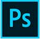

MASAHIRO
PORTFOLIO

Plofile
自己PR
私は、自分の制作物で共感や感動をしてもらうのが目標です。 webデザインの実務経験はないのですが、数か月ほどインハウスデザイナーとしてバナー、LP作成経験があります。
最終的な目標は、デザインからコーディングまでできるフルスタックデザイナーになることです。 「この人に依頼してよかった」と思われるような人材に成長すべく、デザインやコーディングについて日々勉強しております。
コツコツと進める作業が得意です。地道な努力を出来る所が長所です。
私は、自分の制作物で共感や感動をしてもらうのが目標です。 webデザインの実務経験はないのですが、数か月ほどインハウスデザイナーとしてバナー、LP作成経験があります。
最終的な目標は、デザインからコーディングまでできるフルスタックデザイナーになることです。 「この人に依頼してよかった」と思われるような人材に成長すべく、デザインやコーディングについて日々勉強しております。
コツコツと進める作業が得意です。地道な努力を出来る所が長所です。
有資格
Webクリエーター能力検定スタンダード(HTML5)
Photoshopクリエーター能力検定試験スタンダード
illustratorクリエーター能力検定試験スタンダード
Webクリエーター能力検定スタンダード(HTML5)
Photoshopクリエーター能力検定試験スタンダード
illustratorクリエーター能力検定試験スタンダード
～実務でデザインをした作品群～

工場掲示物
掲示物デザイン担当
パートの女性の方が和むようなデザインという希望があり、キャラクターと色味を意識してデザインしました。


就労支援施設
バナーデザイン担当
仕事の内容が工場なので強い印象が出るよう な配色をしました。また、障がいをお持ちの方向けの施設の為、優しい印象も出るようにデザインをしました。


就労支援施設ロゴ
ロゴ担当
『虹がかかった施設で笑顔で過ごせるよう』という願いを込めてデザインをしました。
～サイトの模写～
-納期を想定し、実在するサイトを模写した作品-
AEONサイト※TOPページのみ
コーディング担当
実働時間：80時間29分
詳細は以下です
html、css入力終了=3時間36分
css、jQuery入力調整=16時間33分
css、jQuery入力終了＝8時間41分
css調整、jQuery調整＝7時間20分
css調整、レスポンシブ対応＝13時間2分
css調整、jQuery調整、レスポンシブ対応調整＝31時間57分
Skill

photoshop
実務で使用経験あり。バナー・LP・ウェブデザインをすることができる。

Excel
実務で使用経験あり。簡単な関数であれば調べて表が作れる。
Illustrator
実務で使用経験あり。ロゴのデザインができる。

Word
実務で使用経験あり。グラフを利用し文章をまとめることができる。

Premiere Pro
実務で使用経験あり。動画のカット・テロップ入れが出来る。

Slack
実務で使用経験あり。社内の連絡手段で使用していた事がある。
cubase
MIDI・LINE録音したものをミックスする事が出来る。
VS Code
実務で使用経験あり。他社サイト上の文章修正・ボタンの設置をしたことがある。
filezilla
実務で使用経験あり。自社サーバーのデータ更新で使用したことがある。
クリスタ
基本的な操作をして絵を描いたことがある。
実務で使用経験あり。自社SNSアカウントで画像更新をしたことがある。
WordPress
実務で使用経験あり。既存のCMSを使用し、記事を更新したことがある。

html
実務で使用経験あり。自社サイトの文章修正をしたことがある。

css
実務で使用経験あり。自社サイトの修正をしたことがある。

GitHub
ポートフォリオサイトを作る為に使用した経験がある。
Vercel
ポートフォリオサイトを作る為に使用した経験がある。